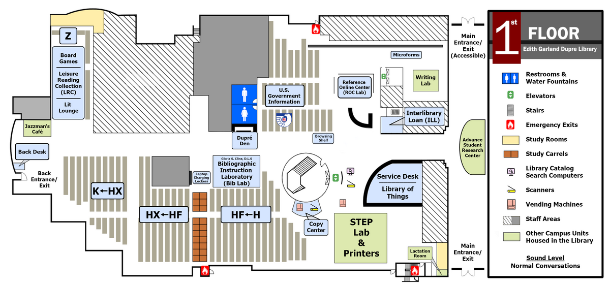
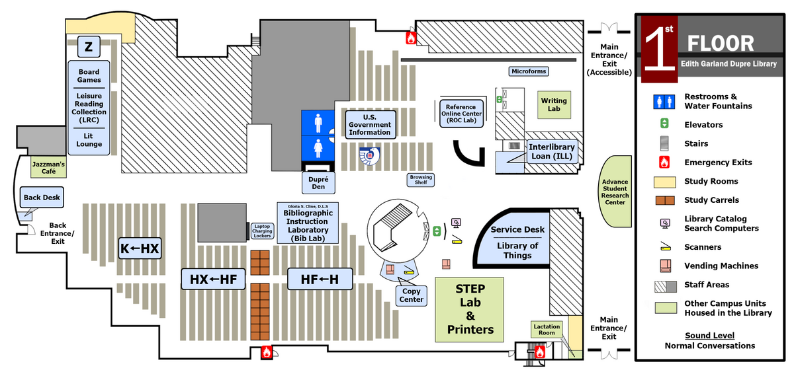
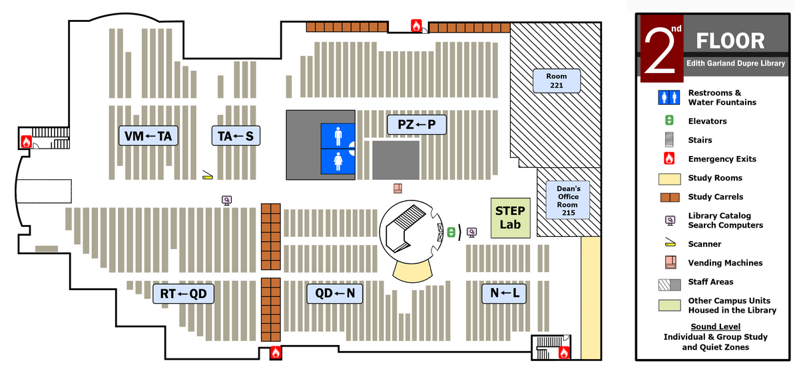
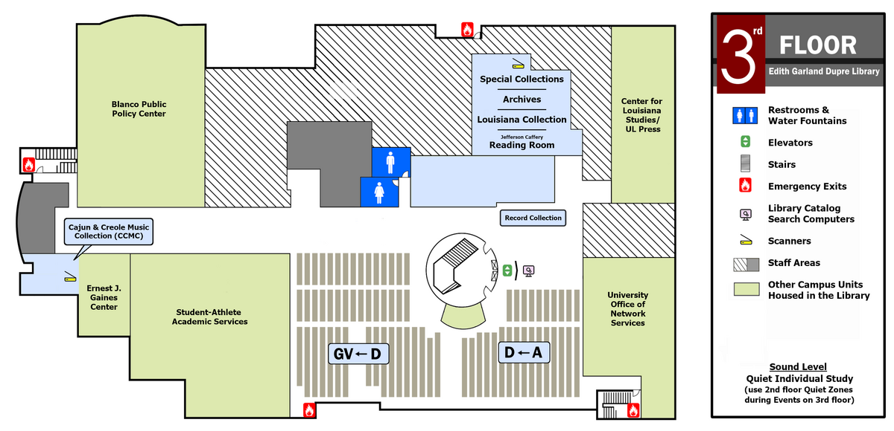

1st Floor
General Stacks Call Numbers: H, J, K, Z
Key locations: Circulation, STEP Lab, Reference Desk, Jazzman's Café.
In addition to the book collection, Dupré Library provides service areas, computer labs, classrooms and a variety of study spaces. Click any floor map to open the full image in a new tab.
General Stacks Call Numbers: H, J, K, Z
Key locations: Circulation, STEP Lab, Reference Desk, Jazzman's Café.
General Stacks Call Numbers: L, M, N, P, Q, R, S, T, U, V
Key locations: Group study rooms, STEP Lab (2nd floor), staff lounge.
General Stacks Call Numbers: A, B, C, D, E, F, G
Key locations: Special Collections, Louisiana Collection, Blanco Center.